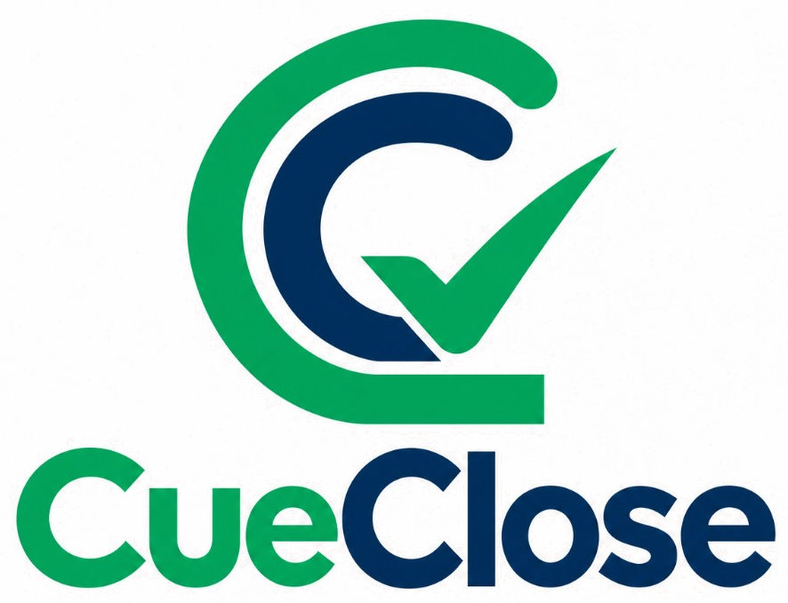

Demo Walkthrough Script
Horizon Arena Tour · Classic → Pro
Runtime ~12–15 minutes
The tour keeps moving. The books keep up.
Spoken and click guide for presenting CueClose to stakeholders and peer engineers.
Drive the live workspace at http://127.0.0.1:3847. Reset with Reset demo before you start.
Product demo script
Timed beats
Classic then Pro
Synthetic tour data
Before you start
| Check | Action |
|---|
| App running | cd web && npm run build && npm run start -- --port 3847 or ./scripts/run.sh |
| Edition | Set header Edition to Classic for the opening arc |
| Personas | Maya Chen for material posts; Jordan Blake for the denial beat |
| Frame | Product demo of CueClose. Synthetic Horizon Arena Tour. Simulated channels. |
Opening line: “CueClose is touring-finance coordination for live production close. Cues arrive with evidence. The model recommends. Humans decide. The ledger stays exact.”
Timed arc
| Block | Clock | Goal |
|---|
| 0. Brand splash | 0:00–0:45 | Brand moment; set the promise |
| 1. Command (Classic) | 0:45–2:30 | Tour context, metrics, persona |
| 2. Material approve + post | 2:30–5:30 | Core trust story |
| 3. Authority denial | 5:30–7:00 | Policy is real |
| 4. Hold path | 7:00–8:00 | Low confidence stays visible |
| 5. Ledger + recon + audit | 8:00–10:00 | Close the loop |
| 6. Switch to Pro | 10:00–13:30 | Waiting-on-me, filters, duplicate gate |
| 7. Close | 13:30–15:00 | Principles + Q&A |
Block 0 · Brand splash
0:00–0:45
Click Land on /. Let the splash breathe. Enter Command when ready.
Say CueClose brand. Tagline: the tour keeps moving; the books keep up. Synthetic tour data; simulated channels.
Do not Rush into the inbox. Let stakeholders register the product name.
Block 1 · Command, Classic
0:45–2:30
Click Confirm Edition = Classic. Open Command.
Point Horizon Arena Tour, policy version, metric tiles, show slate, acting role.
Say Classic is the core close path. Recommendations are visible. Posting only after server-checked human approval. Personas are bound server-side.
Engineer aside: Next.js demo API mirrors FastAPI under /api/v1. Money is exact decimal; wire amounts are strings.
Block 2 · Material approve and post
2:30–5:30
Click Cue inbox → Northwind Rigging Co. (cue_001, ~$8,650). Act as Maya Chen.
Point Evidence excerpts, recommendation confidence, policy notes, materiality.
Say Amount is above materiality. Evidence travels with the cue. The model never posts alone.
- Approve with a short reason (example: “PO and call sheet match Chicago stand-by.”)
- Post journal. Show balanced debit/credit totals.
Say Posting is idempotent. Posted lines are not edited in place; corrections use a reversing path in product rules.
Block 3 · Authority denial
5:30–7:00
Click Switch to Jordan Blake. Attempt a material approval Jordan cannot make.
Say Same UI, different authority. API returns a policy code such as MATERIALITY. Channel messages cannot grant authority. Cue status stays unchanged.
Stakeholder line
Finance stays in control even when the desk is moving fast.
Engineer line
Deterministic policy lives with the domain, not only in the button layer.
Block 4 · Hold path
7:00–8:00
Click Open Clearwave RF (cue_004) or another held / low-confidence cue.
Say Low confidence holds for context instead of forcing a bad post. Held work escalates to the tour controller.
Block 5 · Ledger, reconciliation, audit
8:00–10:00
- Ledger - show the Northwind journal you posted.
- Reconciliation - explain an unexplained variance with a short human note.
- Audit - scroll seed → review → approval → post → explain.
Say Reconciliation explains variance; it does not silently rewrite amounts. The audit trail is append-only.
Block 6 · Pro edition desk tools
10:00–13:30
Click Header Edition → Pro. Note the Pro banner.
6a · Waiting-on-me
Command shows the role-aware queue. Open my queue / inbox ?waiting=1. Maya’s list and Jordan’s list differ.
6b · Show filters
Inbox Show / venue select plus Waiting on me toggle for city owners.
6c · Duplicate acknowledge gate
Open the Stagecraft near-duplicate (Pro seed, often cue_006). Show match reasons. Approve stays disabled until the acknowledge checkbox is checked. Acknowledge is an explicit human step logged with the decision.
Block 7 · Close
13:30–15:00
- A model may recommend; it never posts.
- Money is exact decimal, never binary float.
- Authority is server-checked and audited.
- Reconciliation explains; it does not auto-correct.
- Classic tells the close story; Pro adds the operations desk.
Handouts: Architecture Overview PDF and this Demo Walkthrough PDF in docs/architecture/ and docs/guides/.
Classic vs Pro talking card
| Topic | Classic | Pro |
|---|
| Story focus | Approve → post → explain | Desk workload on top of Classic |
| Command | Open / awaiting / posted / variances | Waiting-on-me first |
| Inbox | Core cue list | Show filter + waiting filter |
| Duplicates | Not emphasized | Acknowledge gate before approve |
| Best for | First-time stakeholders | Operators and peer engineers |
Fallback lines
| If this happens | Say / do |
|---|
| API error | Retry; confirm Node on port 3847 |
| Wrong persona for material cue | Switch to Maya; name the MATERIALITY rule |
| Already posted | Reset demo as Maya; restart Block 2 |
| Real money question | Demo channels are simulated; no real payments leave this workspace |
| Database question | Seeded process memory today; store interface is swap-ready for Postgres |
Guardrails (say at least once)
- Models recommend; they do not post.
- Money is exact decimal, never binary float.
- Channels in this demo are simulated.
- All tour data is synthetic Horizon Arena Tour content.
- Personas are product fiction for the demo narrative.